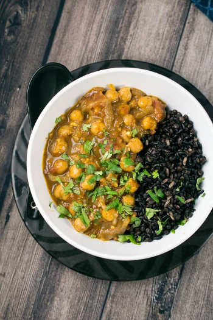

Coconut Chickpea Curry
Original Recipe by Shannon from Yup it's Vegan



Prep time: 10 minutes || Cook time: 30 minutes || Total time: 40 minutes || Serving: 4 || Rating 9/10
Ingredients
- 1 tablespoon olive oil
- 1 large onion, diced
- 2 bell peppers, sliced lengthwise.
- 1 package of frozen chopped spinach, thawed (or fresh chopped collard greens or kale)
- 3 cloves garlic, minced
- 1 inch fresh ginger, minced or grated
- 1 tablespoon garam masala
- 1 tablespoon curry powder
- 1 teaspoon ground turmeric
- 1 teaspoon ground black pepper
- 1/2 teaspoon cayenne pepper (or to taste)
- 1/2 teaspoon salt (plus more to taste)
- 1 and 1/2 cups diced tomatoes (equal to 1 14-oz. can)
- 1 14-oz. can of coconut milk
- 3 cups cooked chickpeas (equal to 2 cans; drain and rinse before using)
- 1 lime or lemon, juiced
- chopped fresh cilantro for serving
Instructions
- In a large pan, heat the oil over medium-high heat.
- Add the onion, bell peppers, and a pinch of salt. Cook, stirring frequently, until the onion is softened, about 5 minutes.
- Reduce the heat to medium. Add the garlic and ginger; stir and cook for 1 minute or until fragrant.
- Stir in the spices and the remaining salt. Cook for 1 minute.
- Add the tomatoes to the pan and stir well. Continue to cook, stirring occasionally, for about 3-5 minutes or until the tomatoes are starting to break down.
- Stir in the coconut milk and chickpeas. Bring the mixture to a boil, then reduce the heat to medium-low and simmer for 10 minutes.
- Add spinach and allow to wilt.
- Add in the lime juice. Season to taste with additional spices and salt.
- Garnish with chopped fresh cilantro.
- Serve over rice
Can be served as it is or over rice/quinoa/barley.
Recipe Notes
To add hearty vegetables such as sweet potatoes, squash or cauliflower:
- Cut the veggies into bite-sized pieces.
- Add them after step 2 but before step 3 (before adding the garlic and ginger)
- Stir-fry for a couple of minutes until the vegetable is softened a little bit.
Tags: gluten-free, dairy-free, paleo, vegan, 30 minutes, casserole, hearty, vegetables, lunch, dinner, main